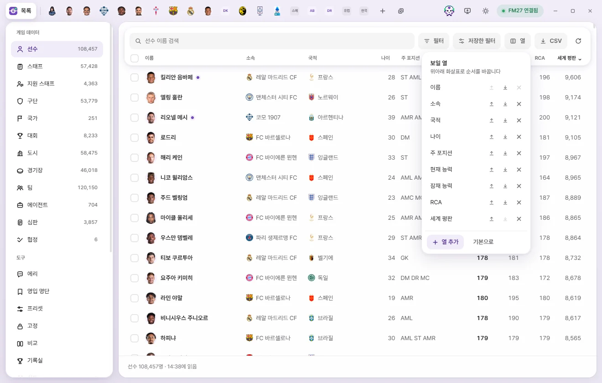
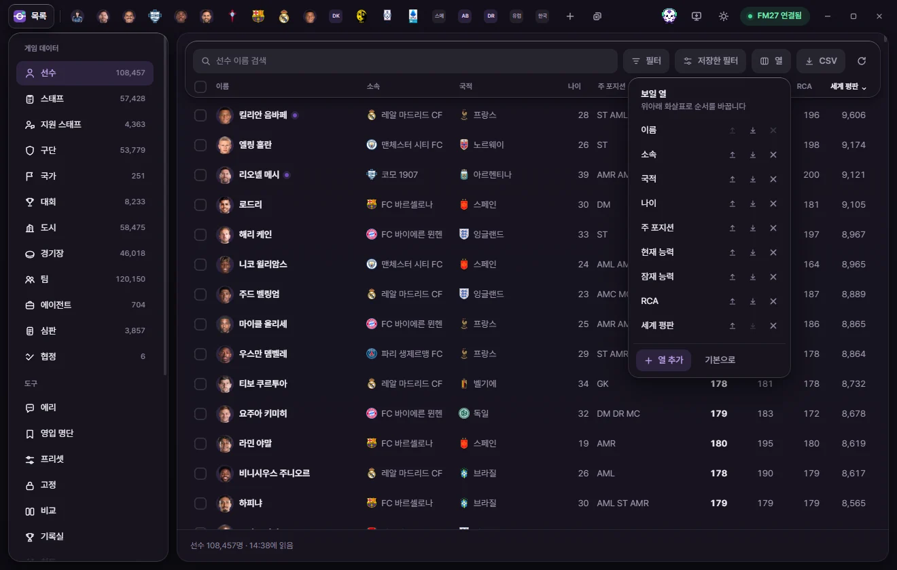
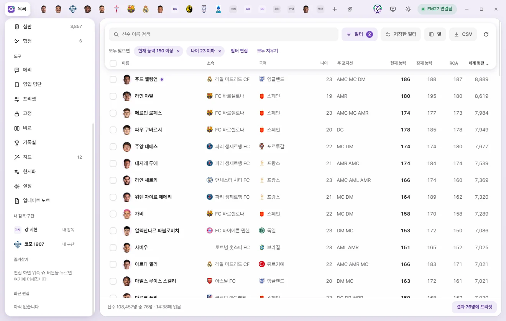
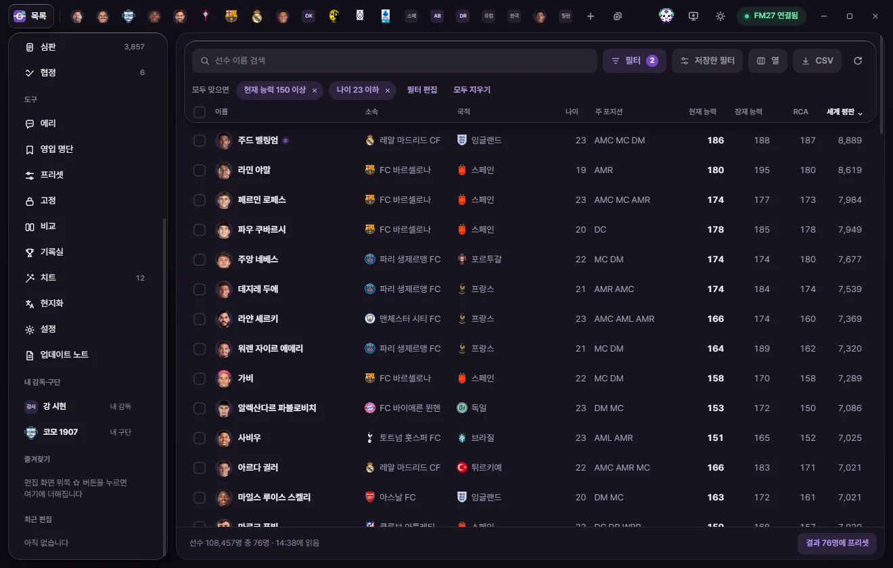
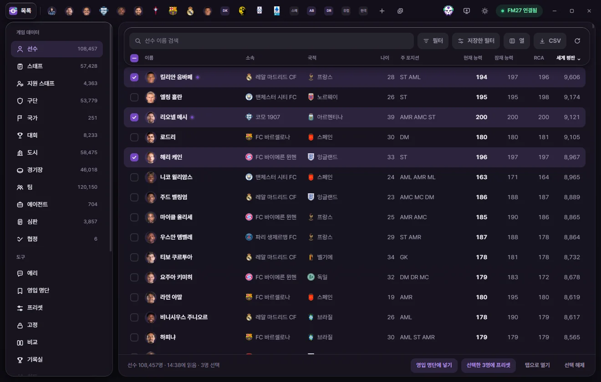

Basics
Using lists
How to search, filter, sort, choose columns, export to CSV, and work with multiple items at once in lists like Players and Clubs.

Opening a list
Click any category under "Game data" in the left sidebar to open its list. The number next to each name shows how many entries FMAX read from the game.
When FMAX connects to the game, it reads every list once up front. While that's happening, a banner like "Reading Player list for the first time" appears above the list. Once that initial read finishes, switching between lists is instant. Any remaining fields (columns not currently shown) continue loading in the background, so adding columns or filtering later stays fast.
If you turn off "When connected to the game, read lists immediately" in Settings, FMAX waits until you open a list or click Reload.
The "Shortlist" screen under Tools works just like the lists described here. It shows only the people on the chosen shortlist, and remembers its columns, sort order, and filters separately from the main Player and Staff lists. For the bar used to create and switch shortlists, see Shortlist.
Buttons above the list
| Button | What it does |
|---|---|
| Search box | Finds items by name. Search |
| Filter | Opens the filter window. When conditions are active, the button shows how many are applied. Ctrl+Shift+F Filter |
| Saved filters | Picks a saved filter and applies it right away. Saved filters |
| Columns | Chooses which columns to show and their order. Choosing columns |
| CSV | Saves the current list view as a CSV file (for Excel). Exporting to CSV |
| Reload (circular arrow) | Reloads every list and open tab from the game. Reloading |
| ? Help | Opens this page. F1 |
Search
Start typing a name in the search box and the list filters immediately. Case and accents (such as é or ñ) are ignored. Press Ctrl+F to jump straight to the search box.
Besides names, search also checks the fields below depending on the list:
| List | Also searches |
|---|---|
| Player | Club, Nationality |
| Staff | Club, Nationality, Full name |
| Support staff | Club, Nationality, Unique ID |
| Club | Short name, Nation, City |
| Team | Club, League |
| Nation | Short name, 3-letter code |
| City | Nation, Region |
| Competition | Short name, Abbreviation, Nation |
| Stadium | Continental competition name, City, Owner club |
| Agent | Nationality, Based nation |
| Referee | Nationality, Home city |
| Agreement | Short name |
You can also search by Unique ID, with or without the r- prefix used for regens (such as r-12345).
Search works alongside any active filters. Your search text is kept only while FMAX stays open.
Sorting
Click any column header to sort by that column. Each click cycles through three states:
- First click: highest to lowest for numbers, or A to Z for text.
- Second click: reverse order.
- Third click: clears sorting.
An arrow appears next to the sorted column header. Rows with empty values always stay at the bottom regardless of sort direction. By default, each list starts sorted highest to lowest by its main column (such as Current ability for Players and Reputation for Clubs).
Choosing columns



Clicking "Columns" opens the "Visible columns" popup.
- Up and down arrows: Move that column one place earlier or later.
- ×: Remove that column. The Name column can't be removed, though you can move it.
- Add column: Opens the field picker. Type in "Search fields" at the top, or browse the categories (Frequently used, attribute groups, Overview, and more) and click a field to add it at the end. You can also navigate with ↑ and ↓ and press Enter to add.
- Reset to default: Restores the default columns for that list.
The "Frequently used" category includes values calculated by FMAX, such as Name, Age, Primary position, Recommended Current Ability (RCA), and Attribute effectiveness. Multi-row data (such as injury lists) can't be shown as list columns.
Your chosen columns, column order, sort order, and filters are saved on this PC separately for each list, so they stay put when you restart FMAX or open another save. Clicking "Reset settings" in Settings resets columns, sorting, and filters across every list back to their defaults.
Filter
Filters narrow down a list using conditions like "Current ability at least 150" or "Unattached". Click Filter (or press Ctrl+Shift+F) to open the separate filter window.

Filter window layout
- Top bar: The "Filter" title, a dropdown for which list you're filtering (such as "Player list"), the theme toggle, and minimize and close buttons.
- Match count: Updates live at the top right with how many items match your current conditions (for example, "120 / 108,457 players"). If FMAX hasn't read a required field yet, "Reading values from the game" appears briefly.
- Quick filters: One-click buttons that add common conditions right away (see table below).
- Player interest: Available only for the Player list (see below).
- Conditions area: Where you add and edit filter conditions.
- Bottom buttons: Clear all, Revert, and Apply to list.
- Left "Saved filters" panel: Your saved filters, plus "Save current conditions", "Import", and "Export".
Changes made in the filter window don't update the list in the main window until you click Apply to list. Until then, "Not applied to list yet" appears at the bottom.
Building conditions
- Click + Condition to open the field picker.
- Find and choose the field to filter by (for example, Current ability).
- Pick a Comparison option (At least, At most, Between, and so on).
- Enter a value—or two values if you picked "Between".
- Repeat from step 1 to add more conditions.
- Click Apply to list (or press Ctrl+Enter, or press Enter inside a value box).
Click the field name at the start of a condition row to swap it for a different field, or click × at the end of the row to remove it. Incomplete conditions appear dimmed and aren't applied.
For attributes and other 1–20 ratings, enter the 1–20 number shown in FM ("In-game number" appears next to the box). Enter money amounts in the currency chosen in Settings (the unit is shown next to the box). Changing your display currency later doesn't change the meaning of the filter.
Comparison options depend on the type of field:
| Field type | Comparison options |
|---|---|
| Number | At least, At most, Between, Is, Is not, Greater than, Less than, No value |
| Text / options | Contains, Does not contain, Is, Is not, Starts with, Empty, Not empty |
| Dates | On or after, On or before, Between, Exact date, No value |
Text comparisons ignore case and accents. For "Yes / No" fields and fixed choices (such as Gender or Club status), pick from the dropdown list.
Match all · Match any · Batch
Once you have two or more conditions, Match all / Match any appears at the top. Match all keeps only rows that meet every condition; Match any keeps rows that meet at least one.
+ Batch nests a group of conditions inside your filter. For example, you can combine "Under 23" with "(Goalkeeper or Centre-back using Match any)". You can nest one more group inside a group. Click the trash icon to remove a group.
Quick filters
| List | Quick filters |
|---|---|
| Player | Under 23, 30 or older, CA 150+, PA 170+, Unattached, Goalkeeper, Centre-back, Central midfielder, Striker, Male players, Female players, Set to retire, Regens, Retired from internationals, Transfer list, Loan list |
| Staff | Manager, CA 150+, PA 170+, Unattached, Under 40, Female, Set to retire |
| Club | Reputation 7,000+, Negative balance, Has transfer budget, Training facilities 15+, Professional clubs, Amateur clubs, Women’s clubs, Under transfer embargo |
| Competition | Reputation 100+, Top division, Women’s competitions |
| Stadium | 50,000+ capacity |
| Referee | Elite list official, CA 150+, Female referees |
| City | Attraction 15+ |
Position quick filters (such as Goalkeeper) match players with a Position familiarity of 15 or higher in that position.
Player interest
Available only in the Player list's filter window. Just like FM's scouting search, this filters players by how interested they are in joining My club.
- Left dropdown: Transfer or loan, Transfer only, Loan only, or Not considered (off).
- Right dropdown: Interested, Persuadable (or higher), or Doubtful (or higher).
FMAX asks the game directly for this information. When you apply the filter, it checks only the first 600 players matching your other conditions, in current list order. While checking, the filter chip above the list shows "Asking game 120/600", and if more than 600 players matched, it notes that only the first 600 were checked. Answers are cached for the current Game date. The live match count inside the filter window doesn't include this condition.
If FMAX can't find My club or the game is busy, the chip shows that it couldn't ask the game along with the reason. If the game was busy handling another call, simply apply the filter again.
Bottom buttons
| Button | What it does |
|---|---|
| Clear all | Clears all conditions in the filter window. Click Apply to list to update the list itself. |
| Revert | Restores the conditions currently applied to the list. |
| Apply to list | Applies the conditions to the list in the main window. Ctrl+Enter |
If you have unapplied changes and close the filter window or switch to another list, FMAX asks once before discarding them.
Switching lists in the main window switches the filter window to match, and changing the list inside the filter window switches the main window too.
Saved filters in the filter window
- Save current conditions: Saves your current rules under a name. Saved filters can be used in any save.
- Click a saved filter to load its conditions into the filter window, then click "Apply to list" to apply them.
- The pencil icon is Rename, and the trash icon deletes the saved filter. Deleting a saved filter leaves any conditions currently applied to the list untouched.
- Export: Saves all of your saved filters as a JSON file in your Downloads folder so you can share them with others.
- Import: Adds filters from an exported FMAX filter file. Any conditions not available in the current Game version are skipped.
Filter chips above the list



When a filter is active, "Match all" (or "Match any") and a chip for each condition appear above the list. Nested groups appear like "Batch · 2 conditions (any)".
- × on a chip: Removes just that condition right away.
- Edit filter: Opens the filter window.
- Clear all: Clears every active condition right away.
Saved filters
Click Saved filters above the list to see the filters saved for that list type, then click one to apply it immediately. Open filter window at the bottom opens the full filter window. If you haven't saved any filters yet, a short message lets you know. Saving and deleting filters is done in the filter window.
Exporting to CSV
Click CSV to save the current list to your Downloads folder as a CSV file that you can open in Excel.
- Your current search, filters, sort order, and visible columns are exported just as shown on screen.
- If you have rows selected, only the selected rows are exported.
- The first column always contains the Unique ID.
- Numbers are written without commas so Excel can sort them cleanly. Money amounts are exported as whole numbers in your chosen currency, with the currency unit added to the column header.
- File names use the list type and export timestamp, such as
fmax-player-20261107-1438.csv.
Once saved, the notification includes a Show in folder button. If the list hasn't been read from the game yet, FMAX lets you know it can't export to CSV yet.
Selecting multiple rows


Use the checkboxes on the far left of each row to select multiple items.
| How | Result |
|---|---|
| Click a checkbox | Selects or deselects that row. |
| Hold Ctrl and click a row | Selects or deselects that row without opening a tab. |
| Hold Shift and click a row or checkbox | Selects every row from the last row you clicked to this one. |
| Far-left checkbox in the header row | Selects all rows currently shown by search and filters, or clears them if all are already selected. |
| Ctrl+A | Same as above (when you aren't typing in the search box). |
| Space | Selects or deselects the row currently focused with the keyboard. |
| Esc | Clears the entire selection. |
When rows are selected, "· 3 selected" appears in the bottom bar with action buttons on the right:
| Button | What it does | When it writes to the game |
|---|---|---|
| Remove from list | Shown only on the Shortlist screen. Removes the selected people from the current shortlist. | Doesn't write to the game. |
| Add to shortlist | Shown only in the Player and Staff lists. Pick a shortlist or click "Add to new list". Shortlist | Doesn't write to the game. |
| Preset for 3 selected | Picks a preset and applies it to every selected row. Presets | Writes immediately once confirmed. |
| Lock selected | Locks the fields chosen on the Locks screen at their current in-game values. Shown only when fields are selected on the Locks screen. Locks | Kept locked while FMAX is running. |
| Open in a tab | Opens all selected rows in tabs. Shown only when 20 or fewer are selected. | — |
| Clear selection | Clears all selected rows. | — |
Even with nothing selected, if search or filters have narrowed down the list, a button like Preset for 120 results appears so you can apply a preset to every matching row.
Right-clicking any selected row opens a context menu that acts on everything selected (Tabs, quick open & right-click menu).
Selections are remembered separately for each list while FMAX remains open.
Clicking rows and keyboard shortcuts
- Clicking a row opens that item's edit tab, or switches to it if it's already open.
- Linked names such as Club or Nationality open that item's own tab (Club, Nation, and so on) when clicked. Hold Shift or Ctrl while clicking to select the row instead of opening a tab.
- After clicking once inside the list, you can move around with the keyboard:
| Key | What it does |
|---|---|
| ↑ ↓ | Moves up or down one row. |
| PageUp PageDown | Moves up or down one page. |
| Home End | Jumps to the top or bottom of the list. |
| Enter | Opens the focused row in a tab. |
| Space | Selects or deselects the focused row. |
| Esc | Clears all selected rows. |
| Menu key or Shift+F10 | Opens the right-click menu for the focused row. |
Icons next to names
| Indicator | Meaning |
|---|---|
| Face or logo | Shows the person's Face or the club, nation, or competition logo if a graphics pack is installed; otherwise shows initials. Graphics packs |
| Purple dot | That item currently has an edit tab open. |
| Star | Saved in Favourites. |
| Padlock | Has one or more locked values. Locks |
| Bookmark | On a Shortlist. Hover to see which shortlist (hidden inside the Shortlist screen itself). |
| Coloured name | Women’s clubs and their teams. |
Reloading
Click the circular arrow above the list (Reload from game) to re-read every list and all open tabs from scratch. Use this to bring FMAX up to date after advancing the in-game date or making changes inside FM. It works the same as "Reload from game" in the Connection status popup.
If you reload a save or open a different save in FM, FMAX reloads automatically.
The timestamp in the bottom bar (such as "Read at 14:38") shows when that list was last read. Because the game keeps moving, values in an older list can differ from live in-game values. Opening a new edit tab always reads that item fresh from the game.
When a list is empty
| Message | What to do |
|---|---|
| No matching items | Try changing your search text or filters. |
| No save loaded yet | Load a save in FM and FMAX will read it automatically. |
| FM27 closed, etc. | Connection issue. Click Check again. Screen overview |
| Couldn’t read the list | Click Reload. |
| Not connected to the game | You opened this view in a browser rather than the FMAX desktop app. |